▲ 단풍 너머로 도로와 주차 차량이 보이는 산 위 풍경. 한국관광공사 적상전망대 사진 묶음 중 하나이며 촬영 시기는 확인하지 못했다. 사진=한국관광공사
"차로 15km, 산정호수까지 갑니다." 한국관광공사 TourAPI는 전북 무주 적상산을 이렇게 소개한다. 양수발전소를 지으며 정상부까지 낸 진입도로로 산정호수와 안국사 입구까지 승용차로 오를 수 있다는 뜻이다. 해발 1,034m(무주군 관광 누리집 기준)의 단풍 명소를 걷지 않고 즐길 수 있는 길이지만, 이번에 확인해 보니 11월부터 문을 닫는 시설, 계절에 따라 통제되는 전망대, 출입이 막힌 폭포가 섞여 있었다. 이 글은 무주군·한국관광공사·국립공원공단 자료를 직접 열어 확인한 개방·운영 정보를 정리하고, 확인하지 못한 부분은 그대로 적는다. 적상산은 이 사이트에서 처음 다룬다.
💡 먼저 바로잡을 것 — 적상산은 국립공원 구역이다
적상산을 "국립공원이 아니다"라고 알고 있었다면 사실과 다르다. 한국관광공사 시설명이 '덕유산국립공원 적상전망대'이고, 국립공원공단 덕유산국립공원사무소가 전북 무주군 적상면 산성로 16에 적상분소를 신축해 2025년 6월 운영을 시작했다는 보도(뉴스1)가 있으며, 한국관광공사 여행기사도 적상산을 덕유산국립공원에 속한 산으로 소개한다. 다만 적상산이 공원 구역에 편입된 시기와 구역 경계는 확인하지 못했다. 따라서 단풍 시기와 탐방 정보는 산림청이 아니라 무주군 관광 누리집과 국립공원공단(덕유산국립공원사무소 063-322-3174)에서 확인하는 편이 맞다.
1. 한눈에 보기 — 위치·높이·확인된 개방 상태
| 장소 | 확인된 운영 정보 | 출처·확인 상태 |
|---|---|---|
| 적상산(전북 무주군 적상면) | 해발 1,034m(향로봉 1,024m). 연중무휴, 이용 시간은 "전화문의 요망", 문의 063-322-4174 | 무주군 관광 누리집, TourAPI. TourAPI 입장료 항목은 '무료', 별도 통행료 안내는 찾지 못했다 |
| 덕유산국립공원 적상전망대(북창리 931-3) | 일몰 전까지 상시 개방, 연중무휴, 계절에 따라 운영 시간 변동 및 통제, 주차 가능 | TourAPI(2026.8.20. 수정 정보). 문의는 063-322-4174로 기재 |
| 적상산사고지(산성로 960) | 10:00~17:00, 동절기(11월~3월 31일) 휴관, 주차 가능 | TourAPI(2025.7.30. 수정). 입장료는 확인하지 못했다 |
| 안국사(산성로 1050) | 상시 개방, 연중무휴, 문의 063-322-6162, 주차 가능 | TourAPI |
| 천일폭포 | 낙석 등 위험으로 출입 제한 | TourAPI(2026.7.13. 수정) |
| 무주양수발전소 홍보관(괴목로 788) | 평일 10:00~17:00, 문의 070-4000-2114 | 무주군 관광 누리집. 적상산 정상부가 아니라 하부 쪽 시설 |
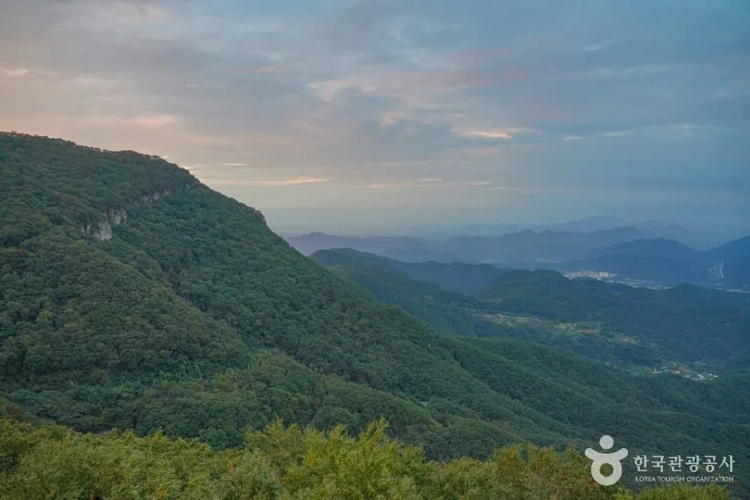
▲ 적상산 쪽에서 본 산 능선 풍경. 한국관광공사 적상산 사진 묶음 중 하나이며 촬영 시기는 확인하지 못했다. 사진=한국관광공사
2. 오르는 길 — 15km 진입도로, 제한은 어디까지 확인됐나
무주군 관광 누리집은 "무주읍내 → 북창 4km → 산정호수 11.9km" 경로를 안내하고, 승용차로 무주읍내에서 약 40분이 걸린다고 적었다. 한국관광공사는 양수발전소 건설 때 정상부까지 닦은 15km 진입도로로 산정호수와 안국사 입구까지 오를 수 있다고 소개한다. 두 숫자(4+11.9=15.9km, 15km)가 조금 다르지만 같은 길을 가리키는 것으로 보이며, 정확한 길이는 확인하지 못했다.
| 항목 | 확인 결과 | 근거 |
|---|---|---|
| 승용차 정상부 진입 | 가능(산정호수·안국사 입구까지) | TourAPI·무주군 관광 누리집 |
| 도로 폐쇄·공사 공지 | 이번에 확인한 공식 자료에서는 찾지 못했다. 다만 2026년 10월 현재 상태를 확정한 공지도 없다 | 무주군·한국관광공사 검색 결과. 가기 전 063-322-4174 확인 필요 |
| 통행료·입장료 | 적상산·적상전망대·사고지·안국사·천일폭포 모두 TourAPI 입장료 항목이 '무료'. 진입도로 통행료 안내는 찾지 못했다 | TourAPI 입장료 항목. 무주군 누리집에는 요금 항목 없음 |
| 양수발전소 관리구간 출입 제한 | 관리구간·제한 시간의 구체 범위는 확인하지 못했다. 전망대에 대해서는 "계절에 따라 운영 시간 변동 및 통제"만 안내됨 | TourAPI 적상전망대 |
| 대형버스 | "10~11월 성수기에는 11인승 이상 대형버스가 전망대 주차장·안국사 주차장 출입이 제한될 수 있다"는 소개가 있음 | 여행 매체(2차) 소개. 무주군 공식 공지로 대조하지 못했다 |
| 케이블카·곤돌라 | 적상산에 설치된 것은 찾지 못했다(곤돌라는 설천면 덕유산리조트 쪽) | TourAPI·무주군 검색 |
📞 출발 전에 이것만은
적상산 이용 시간·통제 현황은 공식 안내가 "전화문의 요망"이다. 무주군 관광 063-322-4174, 적상산사고지 문의는 TourAPI에 무주군구천동관광안내소 063-322-2905, 무주군 관광 누리집 사고지 유구 페이지에 063-320-2542로 올라 있고(둘 다 직접 열어 확인), 안국사는 TourAPI에 063-322-6162로 적혀 있다. 무주군 적상산 페이지에는 산림보호팀 063-320-2436도 함께 적혀 있고, 천일폭포·적상전망대 쪽 문의는 TourAPI에 무주군 관광안내소 063-324-2114로 올라 있다. 어느 번호가 최신 대표 번호인지는 공식 자료로 가리지 못했으므로 통화가 안 되면 다른 번호를 시도하면 된다. 무주군 사고지 페이지에는 운영 시간·입장료 항목이 없다. 무주군 적상산 안내 바로가기
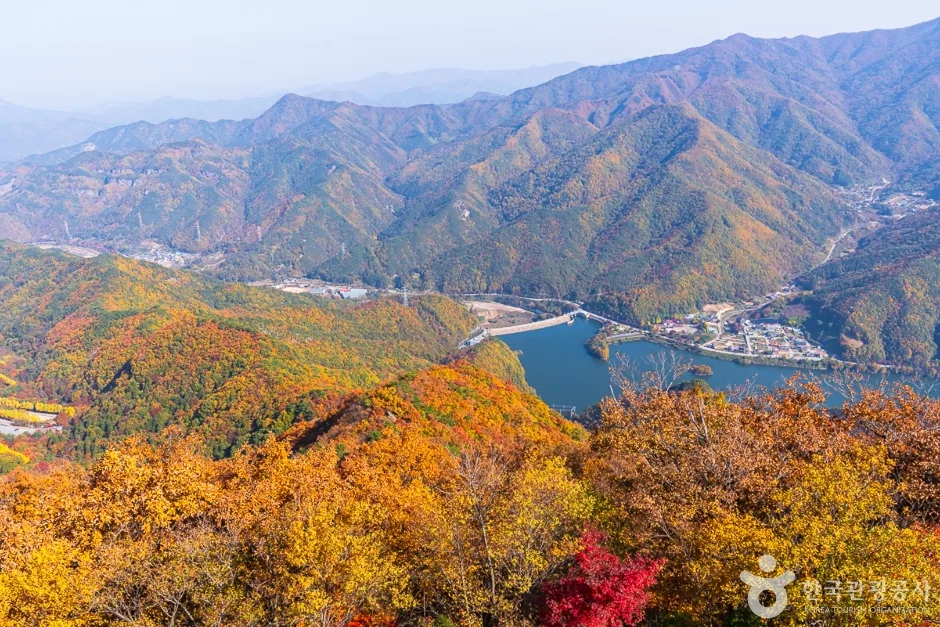
▲ 단풍 든 산 아래로 호수가 내려다보이는 풍경. 적상전망대 사진 묶음 중 하나이며 정확한 촬영 지점은 확인하지 못했다. 사진=한국관광공사
3. 적상전망대 — 굴뚝처럼 생긴 발전설비
한국관광공사 설명에 따르면 적상전망대는 무주양수발전소 상부 저수지인 적상호의 북쪽 끝자락에 있다. 거대한 굴뚝처럼 생긴 구조물은 발전기가 갑자기 멈췄을 때 수로 압력이 급상승하는 것을 완화하는 설비(조압수조)이고, 건물 3~4층 높이의 꼭대기에 오르면 소백산맥과 덕유산이 파노라마로 펼쳐진다. 식음료장·기념품장에서 카드 결제가 가능하다고 안내된다. 적상호는 무주군 소개로 해발 800m 분지에 있는 인공호수이며, 다른 자료에는 다른 수치도 있어 표고는 확인하지 못했다. 여행 매체 소개에는 이 전망대가 한국서부발전이 운영하는 무주양수발전소의 홍보관 겸 전망대이며 무료로 개방된다는 설명이 있다. 입장료는 TourAPI 입장료 항목에도 '무료'로 올라 있다. 반면 운영 주체가 한국수력원자력이 아니라 서부발전이라는 점은 한국서부발전 공식 자료를 찾지 못해 매체 소개 기준으로만 적는다. 또 같은 소개에는 겨울(12월~2월경) 입산통제나 첫눈 뒤 출입 금지가 언급돼 있는데, 오래된 안내일 수 있어 공식 확인이 필요하다. 한국관광공사 좌표로 재계산하면 전망대는 사고지에서 직선 약 0.9km, 안국사 쪽(안국사·호국사비 좌표)에서 약 1.4km 거리라 한 번 올라가면 세 곳을 이어서 볼 수 있는 구조다.
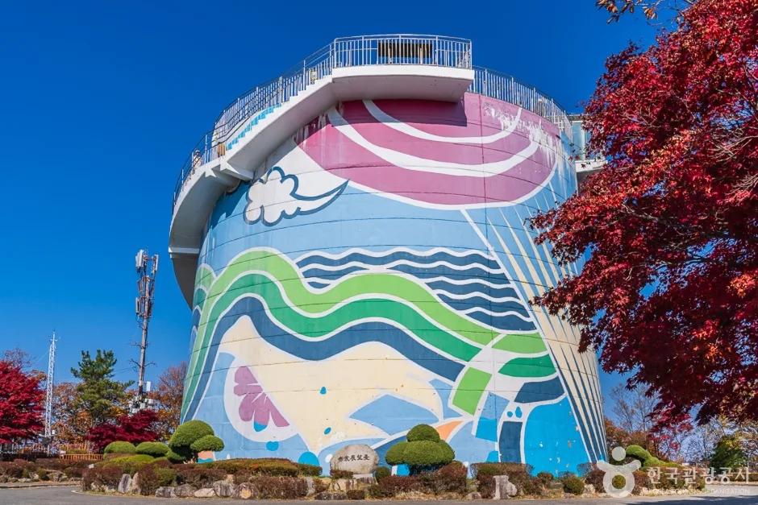
▲ 단풍나무 옆에 선 적상전망대(조압수조). 사진=한국관광공사
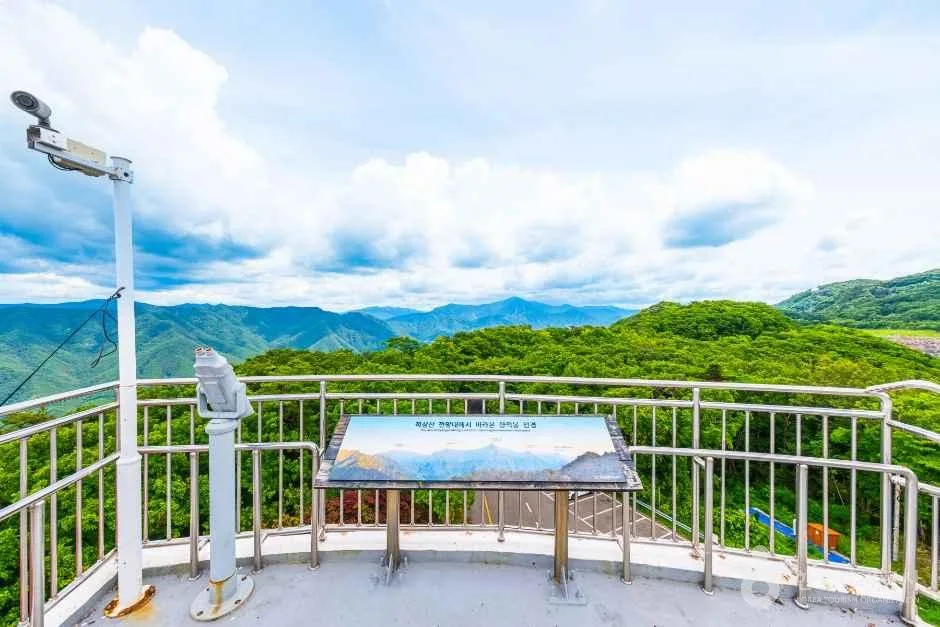
▲ 전망 데크의 안내판과 난간. 여름 풍경으로 보이며 가을 모습이 아니다. 사진=한국관광공사
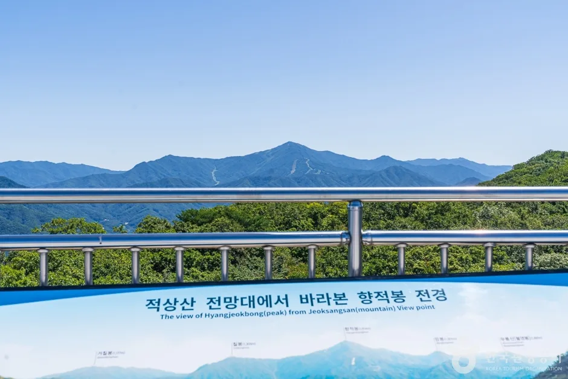
▲ ▲ 적상전망대에서 본 향적봉 방향 전망을 설명하는 안내 패널. 어느 층의 패널인지는 확인하지 못했다. 사진=한국관광공사
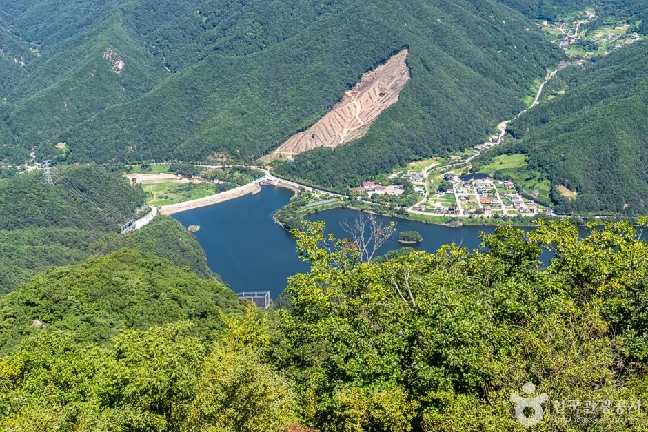
▲ ▲ 높은 곳에서 내려다본 호수와 산 아래 마을. 한국관광공사 적상전망대 사진 묶음 중 하나이며 호수가 적상호인지는 확인하지 못했다. 한여름 풍경으로 보인다. 사진=한국관광공사
4. 적상산사고지 — 11월부터는 문 닫는다
적상산사고지는 TourAPI 기준 10:00~17:00 운영, 11월부터 3월 31일까지 휴관이다. 단풍이 끝나는 11월에는 들어갈 수 없다는 뜻이므로 가을 방문 일정에서 가장 먼저 확인할 곳이다. 한국관광공사의 다른 여행기사에는 운영 시간이 10:30~17:00으로 적혀 있어 시작 시각이 자료마다 다르고, 입장료는 TourAPI 입장료 항목에 '무료'로 올라 있고 무주군 사고지 페이지에는 요금 정보가 없다.
| 항목 | 내용 | 출처 |
|---|---|---|
| 역사 | 임진왜란 뒤 실록 복본을 여러 사고에 나눠 보관. 1641년(인조 19) 선원전이 세워져 완전한 사고 구실. 조선왕조실록 복본 34권과 선원록 5권을 비치했다고 소개 | TourAPI |
| 현재 건물 | 원래 건물은 1992년 댐 건설로 수몰될 처지가 돼 지금 자리로 옮겼고, 선원전은 1997년, 실록전은 1998년에 복원됐다고 소개 | 무주군 관광 누리집 |
| 볼거리 | 22종 전시패널, 실록·선원록 복제본, 무주군청 소속 문화관광해설사 해설 | TourAPI·무주군 |
| 운영 | 10:00~17:00, 동절기(11월~3월 31일) 휴관, 주차 가능 | TourAPI(10:30 시작으로 적은 자료도 있음) |
| 지정 | 국가유산청 목록상 '적상산 사고지 유구'는 시도기념물(전북 기념물 제88호). 당시 보관하던 '조선왕조실록 적상산사고본'은 국보로 지정돼 있으나 서울 용산구(국립중앙박물관) 소장으로 올라 있어 현장에는 복제본만 있다 | 국가유산청 국가유산 정보 API |
| 입장료 | 무료 | TourAPI 입장료 항목(무주군 페이지에는 없음) |
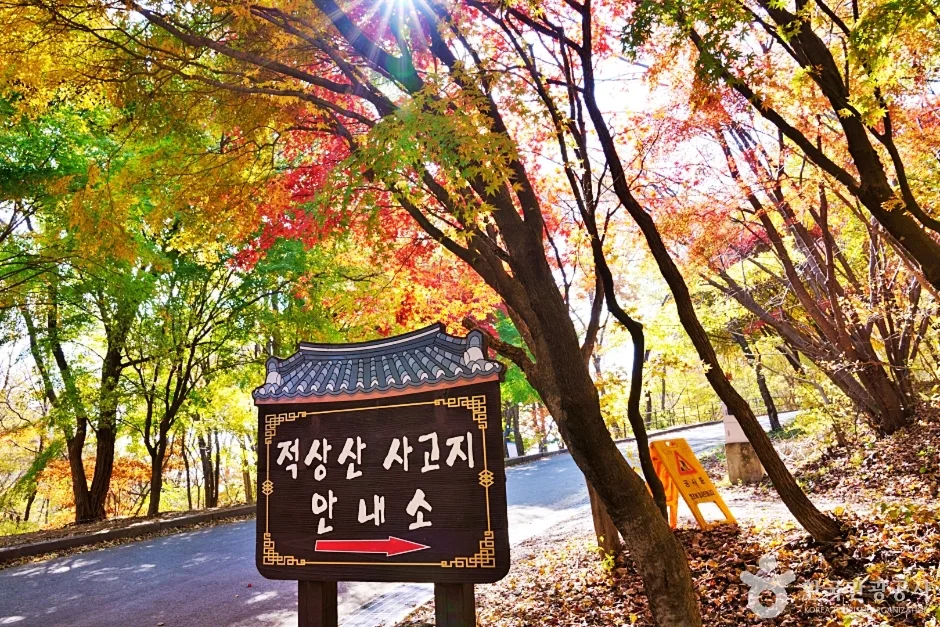
▲ 단풍나무 사이의 '적상산 사고지 안내소' 안내판. 사진=한국관광공사
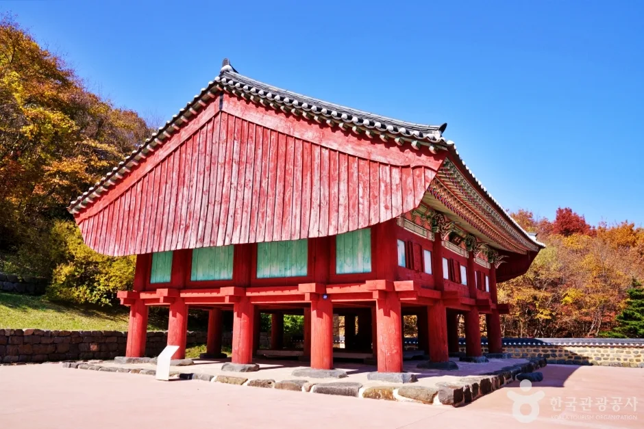
▲ 적상산사고지의 붉은 목조 건물. 건물 이름은 사진만으로 확인하지 못했다. 사진=한국관광공사
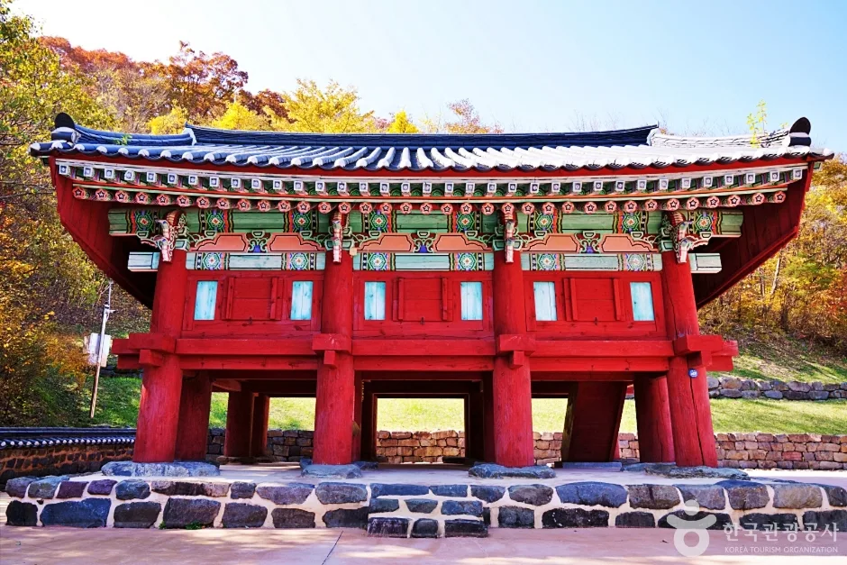
▲ 사고지의 또 다른 목조 건물 정면. 사진=한국관광공사
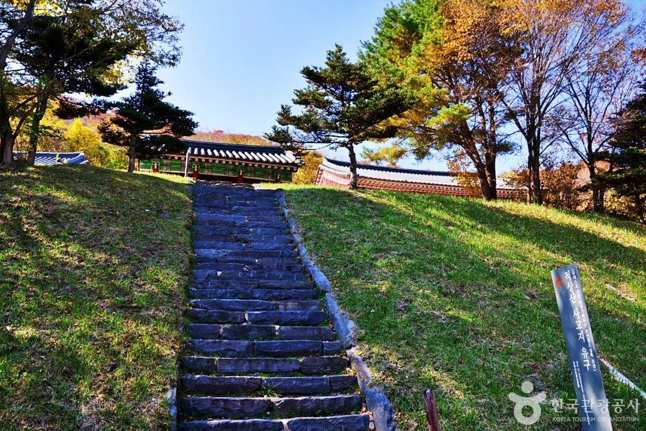
▲ 돌계단 위로 건물이 보이는 사고지 진입부. 사진=한국관광공사
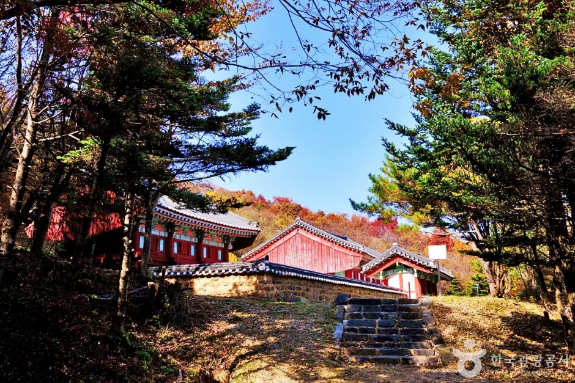
▲ 숲 너머로 보이는 사고지 건물 일대. 한국관광공사 적상산사고지 사진 묶음 중 하나이며 건물 이름은 사진만으로 확인하지 못했다. 사진=한국관광공사
▲ 붉은 옷 인형들이 가마를 옮기는 전시 모형. 한국관광공사 적상산사고지 사진 묶음 중 하나이며 어떤 전시인지는 확인하지 못했다. 사진=한국관광공사
5. 안국사·적상산성 — 산 위에 남은 고찰과 성벽
안국사는 TourAPI·무주군 설명으로 고려 충렬왕 3년(1277) 월인화상이 지었다고 전하는 적상산성 안의 유일한 고찰이다. 광해군 6년(1614) 산성 안에 사각이 설치되고 1641년 선원각이 세워지면서 사고를 지키는 승병들의 숙소로 쓰였고, 양수발전소 건설 때문에 호국사지 자리로 옮겨 앉았다고 한다. 상시 개방(연중무휴)이며 문의는 063-322-6162다. 안국사에서 안렴대까지는 걸어서 10분 정도라는 2차 소개가 있으나 공식 자료로 확인하지 못했다. 한국관광공사 좌표로 계산한 사고지와 안국사 사이 직선 거리는 약 0.4km이다.
| 장소 | 내용 | 비고 |
|---|---|---|
| 안국사 | 1277년 창건 전승, 상시 개방, 주차 가능, 입장료 무료 | TourAPI. 창건은 전승으로 소개되며, TourAPI 적상산 소개문에는 같은 '충렬왕 3년'이 1227년으로 적혀 있으나 충렬왕 3년은 1277년이다 |
| 적상산성 | 고려 후기 축성 소개, 조선 때 사고 보호용으로 증축. 산성 둘레가 약 8.1km라는 보도가 있음 | 둘레 수치는 단일 보도(비건뉴스, 2026.10.4.)라 확인이 더 필요 |
| 지정 | '무주 적상산성'은 국가유산청 목록상 사적(제146호), '적상산성 호국사비'는 시도유형문화유산(제85호) | 국가유산청 국가유산 정보 API |
| 안렴대 | 정상 남쪽 절벽 위 유적, 전망 명소로 소개. 무주군은 병자호란 때 산서(사고) 실록을 이곳 석실로 옮겨 보존했다고 설명 | 무주군 관광 누리집(위치·소요 시간 미확인) |
| 주소 | 안국사 산성로 1050, 사고지 산성로 960 | TourAPI |
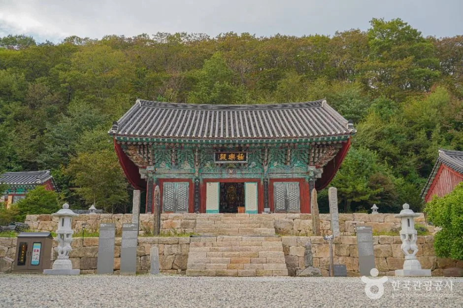
▲ 안국사 경내의 전각. 어느 전각인지는 확인하지 못했다. 사진=한국관광공사
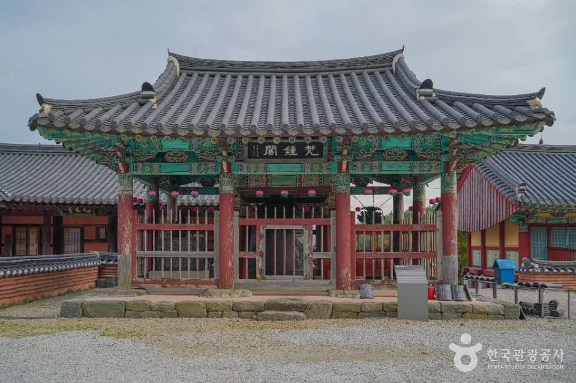
▲ 안국사의 큰 전각 정면. 사진=한국관광공사
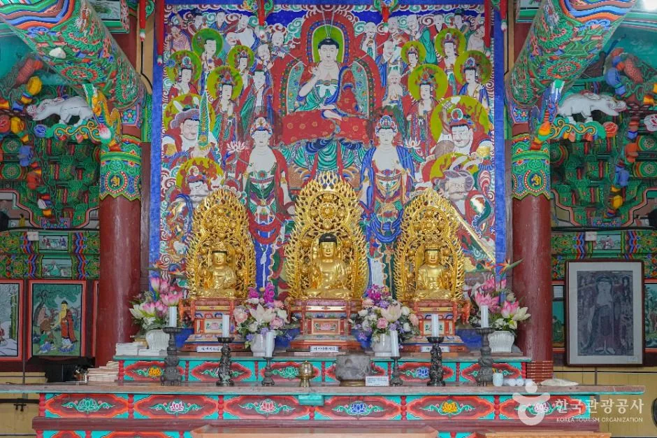
▲ 안국사 법당 내부. 촬영 가능 여부는 현장 안내를 따라야 한다. 사진=한국관광공사
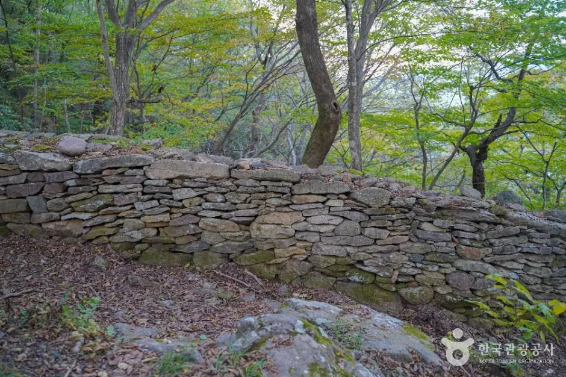
▲ 적상산성의 돌 성벽. 성 내부 어느 구간인지는 확인하지 못했다. 사진=한국관광공사
6. 걷고 싶다면 — 천일폭포는 막혀 있고 탐방로는 확인이 더 필요
천일폭포는 적상산 북창마을을 지나 정상으로 가는 드라이브길 중간에 있는 길이 약 30m의 폭포다. TourAPI는 "천일폭포 주차장으로 검색해 차를 세우고 산길을 걸어 10분 정도 가면 폭포 아래"라고 소개하면서도 "낙석이나 기타 위험 때문에 출입이 제한되고 있다"고 적었다. 즉 주차장에서 잠깐 들러 폭포 아래까지 내려가 보는 것은 현재 기준으로 권하기 어렵다. 이 제한은 올해 새로 생긴 것이 아니다. 무주 국가지질공원 소개 글(2023년 3월 13일자, 직접 열어 확인)이 이미 '적상산 천일폭포…는 현재 낙석이 진행 중으로 통행을 제한하고 있다'고 적었으므로 최소 2023년 3월부터 같은 제한이 안내돼 왔다. 한국관광공사 천일폭포 항목은 2012년 3월에 등록된 뒤 2026년 7월에 수정됐다. 이와 별개로 검색으로 확인한 안내에는 폭포 진입로 약 300m 구간이 2012년 11월부터 통제됐고 문의처는 덕유산국립공원사무소(063-322-3174~5)라는 설명이 나온다(해당 원문은 직접 열어보지 못했다). 통제 시작일 자체는 확인하지 못했고 해제 공지도 찾지 못했다. 한국관광공사 '7월 수정' 기록은 안내문을 갱신한 날짜일 뿐 새 통제 시작일이 아니다.
| 항목 | 확인 결과 | 근거 |
|---|---|---|
| 천일폭포 | 길이 약 30m, 출입 제한(낙석 등). 국가지질공원 소개도 같은 취지. 진입로 300m 구간·2012년 11월부터라는 설명은 미확인 검색 정보 | TourAPI(2026.7.13. 수정), 지질공원 소개 글. 문의 덕유산국립공원사무소 063-322-3174 |
| 서창 코스(서창통제소~삼거리~안국사) | TourAPI 적상산 항목에 서창코스 2시간·3.8km, 개방 구간 '서창공원지킴터~안국사 3.8km'로 적혀 있다. 반면 치목코스(치목~송대폭포~안국사 3.7km)와 안국산~남문지 0.8km는 '입산통제 구간'으로 올라 있다. 국립공원공단 페이지에서는 확인하지 못했다 | TourAPI(2025.10.31. 수정). 현재 통제 여부는 전화 확인 |
| 안국사~안렴대 | 도보 약 10분이라는 2차 소개 | 2차 소개(미확인) |
| 가을 산불조심기간 입산 통제 | TourAPI 적상산 항목에 '가을철 11월 1일~12월 15일(국립공원은 11월 15일~12월 15일) 산불예방을 위해 등산로 구간 한시 통제, 기상 여건에 따라 일부 조정'이라고 적혀 있다. 올해 적상 구간의 실제 통제 구간은 확인하지 못했다. 11월 이후 도보 산행은 사전 확인이 필요하다 | 국립공원 구역이므로 덕유산국립공원사무소 063-322-3174 확인 필요 |
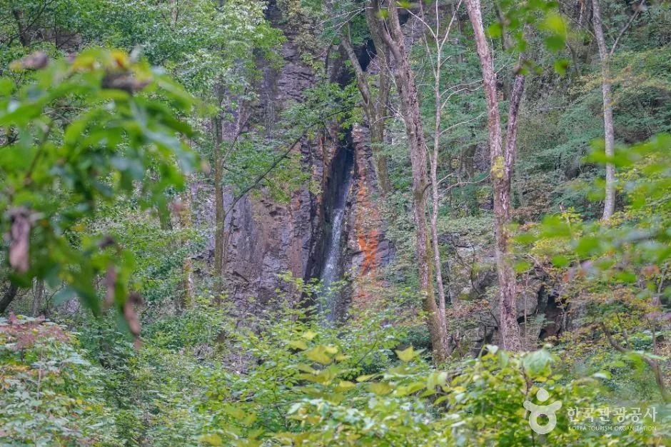
▲ 천일폭포 사진 묶음 중 한 장. 폭포는 먼 거리에서 보인 모습이며 현재 폭포 아래는 출입이 제한된다. 사진=한국관광공사
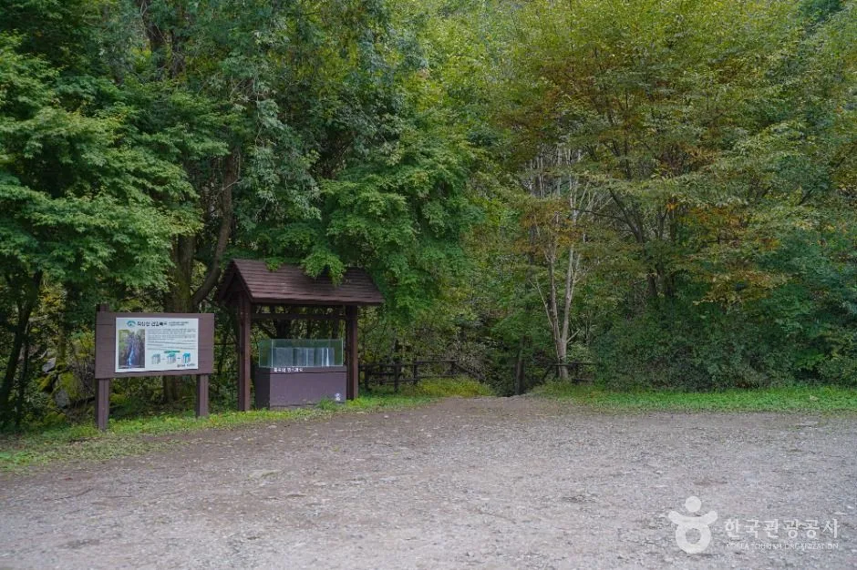
▲ ▲ 천일폭포 사진 묶음 중 하나인 안내판 있는 숲길 초입과 공터. 어느 지점인지는 확인하지 못했으며, 폭포 접근 구간은 출입이 제한된다. 사진=한국관광공사
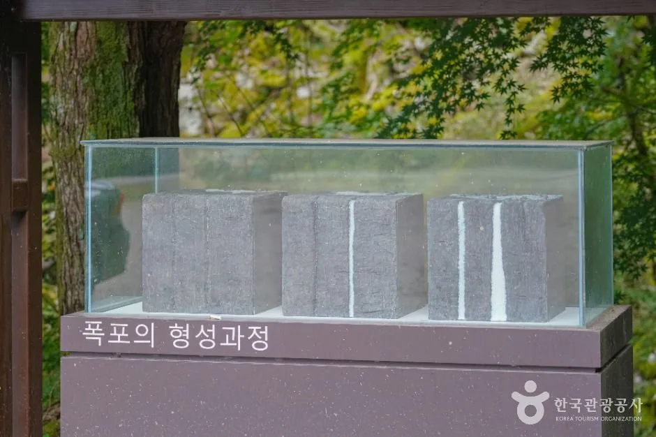
▲ ▲ 폭포 형성 과정을 설명하는 전시 모형. 천일폭포 사진 묶음 중 하나이며 설치 위치는 확인하지 못했다. 사진=한국관광공사
7. 단풍 시기 — 공식 날짜는 확인하지 못했다
한국관광공사 설명은 적상산이 사방이 깎아지른 암벽이고 그 주변에 붉은 단풍나무가 많아 가을이면 온 산이 빨간 치마를 입은 것 같다고 해서 적상(赤裳)이라는 이름이 붙었다고 전한다. 구체적인 절정 시기는 무주군 공식 자료에서 찾지 못했다. 2차 소개 글들은 "10월 중순~하순", "10월 말부터 절정을 향해 달린다"고 적는데, 표현이 제각각이다. 오늘(10월 7일) 현재 단풍이 얼마나 들었는지도 확인하지 못했다. 한국관광공사 전망대 사진은 이미 붉게 물든 풍경을 담고 있지만 촬영 연도는 알 수 없다.
| 출처 | 표현 | 신뢰도 |
|---|---|---|
| 무주군·한국관광공사 | 가을 단풍 명소, 늦가을 전망대 단풍 풍경 소개. 날짜 없음 | 공식이지만 시기 정보 없음 |
| 2차 여행 매체·산악회 공지 | 10월 중순~하순, 10월 말부터 절정 | 예년 기준 소개, 올해 예측 아님 |
| 산림청 단풍 예측(보도) | 올해 단풍은 10월 초 강원 북부부터 시작해 하순에 전국 절정, 설악산 10월 20일·속리산 28일·내장산 11월 4일 등으로 예측됐다는 보도. 적상산·덕유산 값은 확인하지 못했다 | SBS Biz 보도(예측 지점 일부만 확인). 적상산은 고도가 높아 이들 사이 시기로 짐작되나 추정일 뿐이다 |
▲ 단풍 너머로 도로와 주차 차량이 보이는 산 위 풍경. 한국관광공사 적상전망대 사진 묶음 중 하나다. 사진=한국관광공사
8. 인근 코스 — 반딧불축제 터·덕유산 곤돌라
같은 무주권에서 이 사이트가 이미 다룬 곳은 두 곳이다. 무주 반딧불축제 기사는 제30회 축제가 9월 4~12일 열렸다고 전했으므로 올해 일정은 끝났다. 축제 무대인 무주읍 쪽은 한국관광공사 좌표(적상전망대 기준) 직선으로 약 6km 떨어져 있고 도로 거리는 확인하지 못했다. 높은 곳이 목적이라면 덕유산 향적봉 곤돌라 기사가 요금과 예약 구간을 정리했다. 덕유산리조트까지는 같은 기준 직선 약 9.5km다. 두 기사의 내용은 여기서 다시 풀지 않는다.
| 장소 | 적상산에서 | 비고 |
|---|---|---|
| 무주읍(반딧불축제 장소 쪽) | 직선 약 6km(적상전망대 기준) | 올해 축제는 9월 12일 종료. 도로 거리 미확인 |
| 덕유산리조트(곤돌라 승강장 쪽) | 직선 약 9.5km(같은 기준) | 향적봉 구간 예약은 기존 기사 참고 |
| 무주양수발전소 홍보관 | 괴목로 788(하부 쪽) | 평일 10:00~17:00, 070-4000-2114 |
✅ 출발 전 체크리스트
· 적상산은 덕유산국립공원 구역. 공식 문의 무주군 063-322-4174, 덕유산국립공원사무소 063-322-3174
· 승용차로 산정호수·안국사까지 약 15km. 폐쇄·공사 공지는 찾지 못했으나 현재 상태 확정 근거도 없어 전화 확인
· 적상전망대는 일몰 전까지 개방이지만 계절에 따라 시간 변동·통제
· 적상산사고지 10:00~17:00, 11월~3월 31일 휴관, 입장료 무료(TourAPI)
· 천일폭포는 낙석 위험으로 출입 제한(해제 공지 없음, 문의 063-322-3174)
· 10~11월 성수기 11인승 이상 대형버스 주차장 출입 제한 가능(2차 소개, 공식 미확인)
· 단풍 절정 시기는 공식 날짜 없음(2차 소개는 10월 중순~하순)
9. 정리
무주 적상산은 해발 1,034m의 단풍 명소로, 승용차로 약 15km를 올라 산정호수와 적상전망대, 안국사까지 갈 수 있는 길이 확인됐다. 다만 적상산사고지는 11월부터 3월 말까지 휴관하고, 천일폭포는 낙석 위험으로 출입이 제한되며, 전망대는 계절에 따라 운영 시간이 바뀌거나 통제될 수 있다.
적상산은 국립공원공단 적상분소가 있는 덕유산국립공원 구역이다. 이번에 도로 폐쇄·공사 공지는 찾지 못했지만, 진입도로 통행료·양수발전소 관리구간 제한·올해 서창 쪽 탐방로 통제 구간·천일폭포 통제 시작일·공식 단풍 절정 날짜는 확인하지 못했다. 출발 전에 무주군 관광(063-322-4174)과 덕유산국립공원사무소(063-322-3174)에 확인하자.